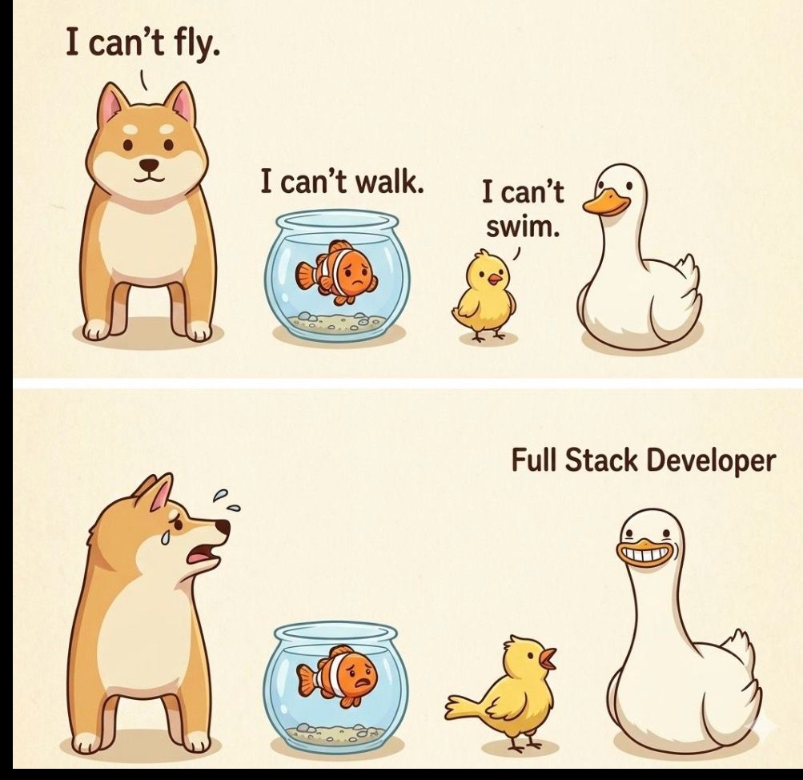
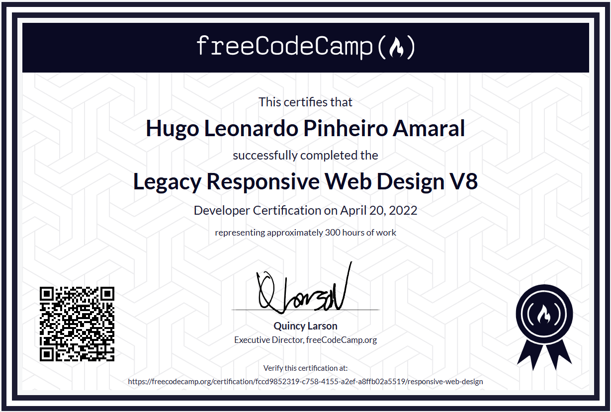
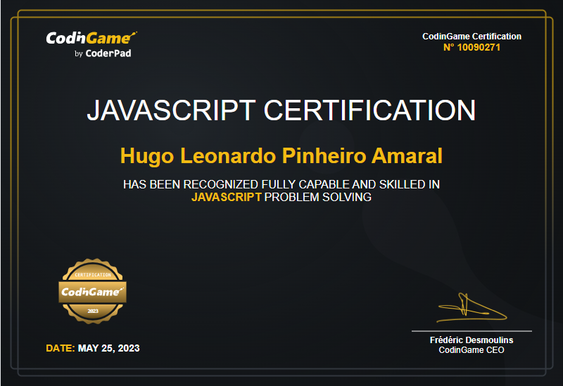

Full Stack Software Engineer
Sistemas complexos em Node.js com JavaScript, MySQL, React e Bootstrap
Sou engenheiro de software focado em arquitetura backend usando Node.js e bancos relacionais. Tenho experiência construindo sistemas escaláveis, APIs REST, autenticação, segurança e deploy em cloud.
- FocoArquitetura backend (Node.js)
- BancoMySQL (modelagem e performance)
- EntregaMVP → evolução contínua
- QualidadeSegurança, performance e produção
- ProtocolosNoções de SIP/RTP e fluxo de chamadas
- DiagnósticoApoio na leitura de logs e análise de PCAP
- InfraContato com FreeSWITCH + OpenSIPS (config/ajustes)
- ProduçãoLinux e rotinas avançadas de operação/monitoramento
O que eu entrego
Aplicações completas e escaláveis, com uma base sólida para evoluir.
Stack principal
Ferramentas que uso para construir sistemas complexos com velocidade e consistência.
Professional Summary
Software Engineer focado em arquitetura backend com Node.js e bancos relacionais. Experiência construindo sistemas web escaláveis, APIs REST, autenticação e deploy em cloud. Forte base em otimização de performance, práticas de segurança e aplicações prontas para produção.

- Contribuí na construção e suporte de fluxos de ligações via VoIP usados pelo SAMU (Brasília).
- Desenvolvimento de sistemas com Node.js e MySQL.
- Autenticação segura e controle de acesso por perfis (RBAC).
- Dashboards e módulos de relatórios.
- Otimização de consultas SQL e indexação.
Sistemas publicados
Links reais para avaliação. Se quiser, eu posso disponibilizar credenciais de demonstração.
Como eu trabalho
Um processo simples para reduzir risco e acelerar entrega.
-
Diagnóstico rápidoEntender objetivo, usuários e regras de negócio.
-
Plano de entregaFatiar por valor (MVP e próximas versões).
-
ImplementaçãoFront + back, validações, segurança (bcrypt/sessões/CSRF) e qualidade de código.
-
Deploy e acompanhamentoPublicação (Railway/Netlify), CI/CD e ajustes com base em feedback real.
Certificações e Educação
Formação acadêmica e certificações relevantes em desenvolvimento de software.



Vamos conversar
Se você é recrutador(a) ou líder técnico(a), posso te passar mais detalhes do meu histórico, disponibilidade e contexto dos projetos.